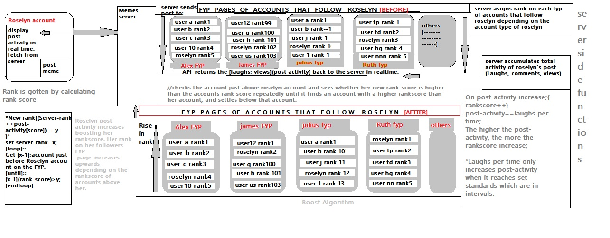

ON TRENDING
- Viral memes
(Determine by rate of laughs per given time); higher laugh count in a short time automatically adds it to
trending list.
- TRENDING LORDS.
- feature allows the memelords who have had the highest laugh counts in a week to be automatically added on the trending lords list.
Trending works per region
REGIONS
Content on the trending page works different for different regions.
A Region is obtained automatically through the device location. The above filter does not limit searches and following page[For you page]
The platform requires the device location.
- Branding a meme with a Unique Watermark that acts as a ownership copyright to your content.
Watermark
A defined watermark for copyright that allows user to set their desired name on the watermark.
A Meme user is able to see the creator of the meme, hence allowing meme content creators to get a larger audience.
This limits credit only to the content creator.
- Create
- Text Meme
- Photo only meme
[Photo design tools]
- Photo with caption
- Reposting and meme remixing
Allowed without asking for permission from the content creator, but copyright is maintained
through the unique watermark.
This is ana dded advanvtage to the content creeator by helping the content reach an even larger audience with the
content maker's unique watermark.
- STICKER maker
Allows creation of stickers as content that will be branded using cpyright watermark.
- ANALYTICS TOOLS
To track metrics (profile views, post views, post shares, etc.)
POSTING OF CONTENT AND HOW IT REACHES AUDIENCE
- VIEWING
You receive only memes of an account you follow on your page.
Boosted posts are also showed on your page depending on the content you like.
- POSTING
Any member is allowed to meme(share a meme.) or remix a meme with their own content.
Collaboration of posting memes to increase the reach limit.
A member reach limit is determined by the limit algorithmm

}
FYP(For You Page)
Main algorithm is sorting (Top To Bottom).
Content is sorted from the top content to bottom content.
Sorting is done both to account type, account activity and number of laughs and views per time.
Sorting
Account Type
On my 'Following' list(the people I follow), there are accounts with high user activity and others with lower user activity.
Posts from Top accounts(with high user activity), are posted on top of my FYP page downwards.
Account Activity
It is determined by ottal number of laughs for all posts for the account. If an account has reached a larger audience,
(determined by Insight tools) it has a higher account activity, hence gets a top position on the FYP Page.
Laughs(Likes) Per time[LPL]
If a user posts a meme, the algorithm boosts the position of the post on the FYP page of his/her followers with time irregardless of their
position placed during posting.
Targeted promotions and advertising.[MEMELORD RESERVED]
A memelord can use their platform to market brands and earn money from the respective business or brands.
Marketing of this category is not set to distact mai them of the platform, as it is only memelord reserved,
hence only memelords can perfom marketing.
To become a memelord, you will have to have an active account with a large following audience and
high laughs count.
The Memelord title/badge is not permanentand it can be dropped after a memelord stops qualifying for the
title
i.e stops being active and looses laugh count limit of a memelord.
Powered by
memes